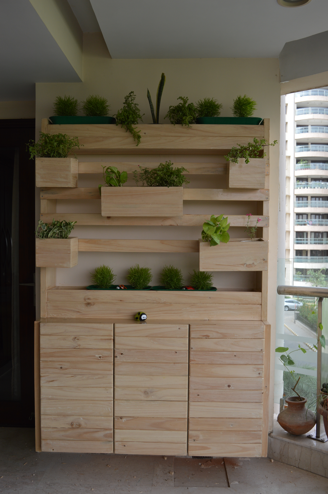
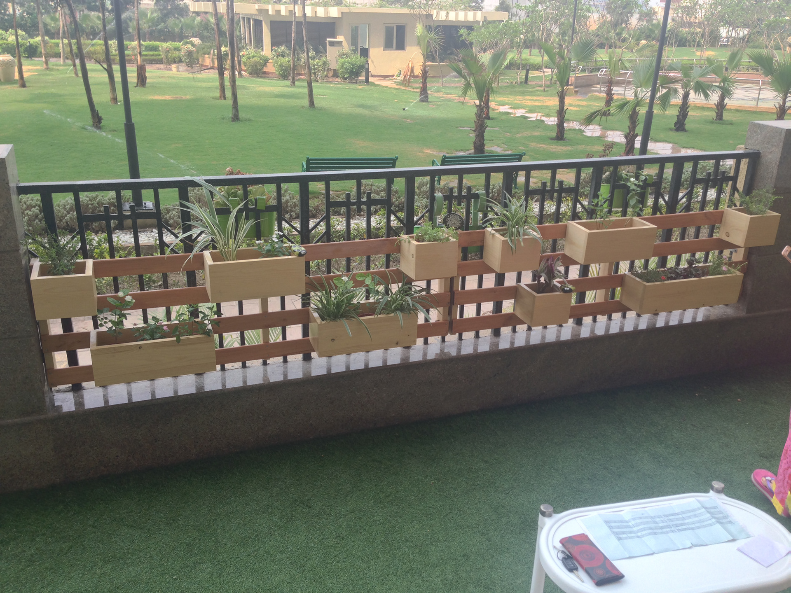
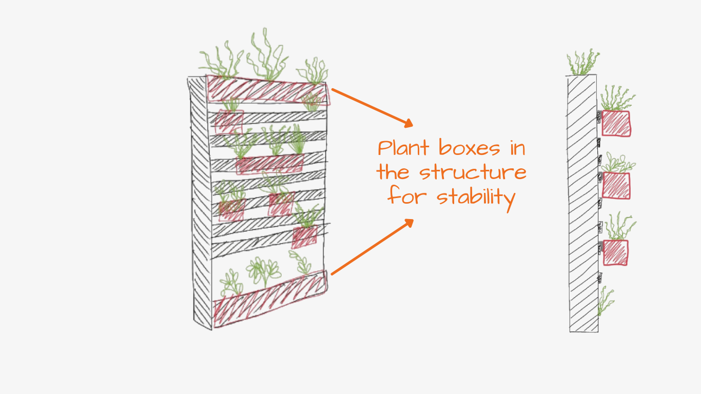
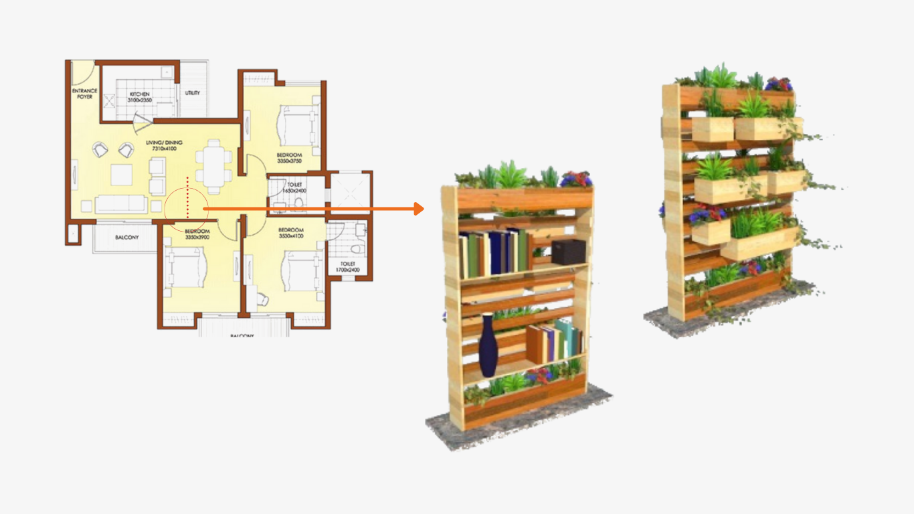
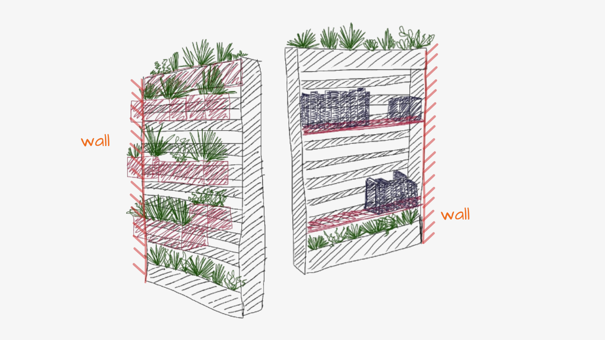
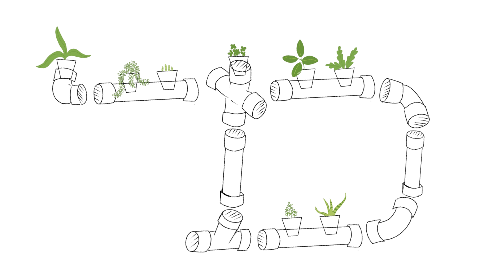
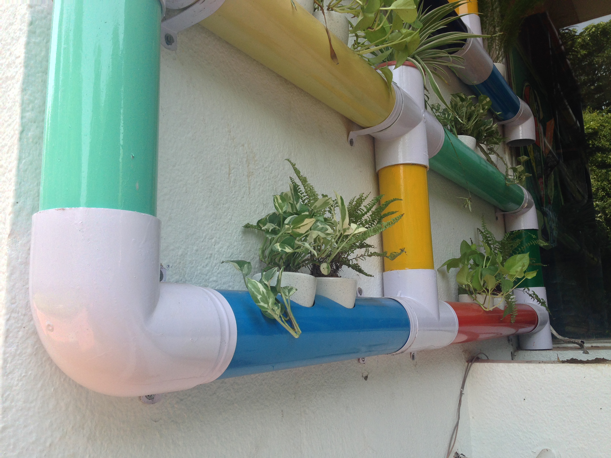
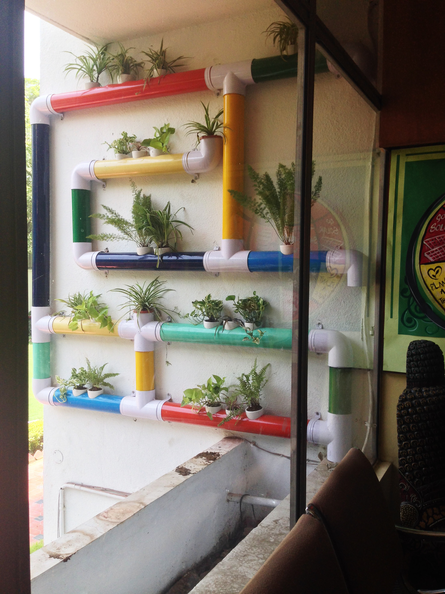
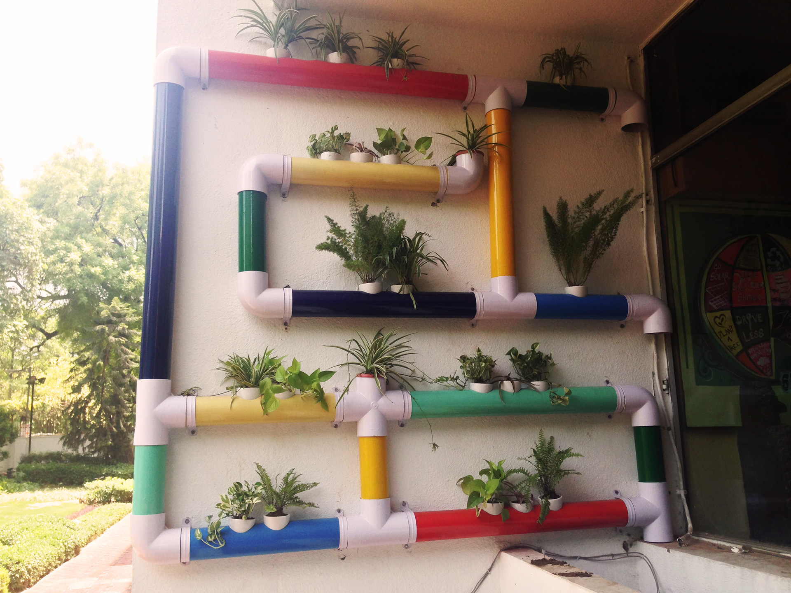

Vertical garden
Space saving Vertical Garden Solution for the Urban Indian concrete jungle.
Challenge: Lack of dedicated Space for gardening and storage
Solution: Solve the challenge of space constraints and go vertical instead of horizontal. Instead of cheap plastic vertical garden and to create an aesthetically pleasing and long lasting product, I went in for a wooden structure. These work well for indoor as well as outdoor use. These multifunctional products can be used for privacy, storage unit as well as a balcony design feature.




Challenge: With an increase in the highrises in metropolitan cities the plan of the apartments are very similar to each other, with open concept living room and dining rooms.
Solution: To have a partial partition I came up with a concept where we can create a vertical garden structure with both the front and the back being functional. So we use one side as the vertical garden and the other side as a bookshelf.


PVC Pipes → Vertical Garden
This project was done for ‘The Indian School’ in New Delhi, India.
I have used left over PVC pipes from construction sites to create a vertical garden to fill an unused wall as an inspiration to the student community regarding sustainability and gardening.


